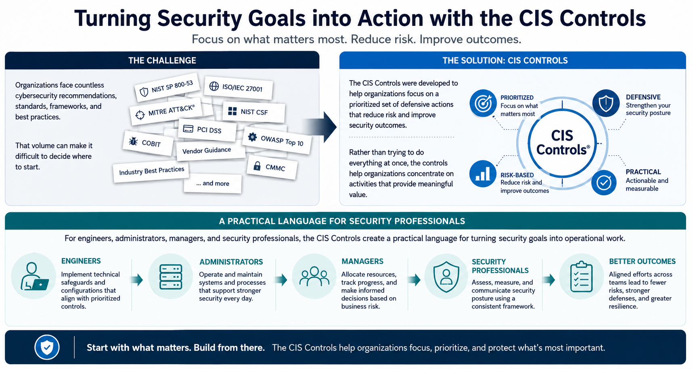

What Are the CIS Controls?
Why the CIS Controls Exist
Connecting to LMS... Progress: in progress
Version 1.0 | Date: 2026-06-16 | Educational guidance for understanding CIS Controls concepts.

Narration
Organizations face countless cybersecurity recommendations, standards, frameworks, and best practices. That volume can make it difficult to decide where to start.
The CIS Controls were developed to help organizations focus on a prioritized set of defensive actions that reduce risk and improve security outcomes.
Rather than trying to do everything at once, the controls help organizations concentrate on activities that provide meaningful value.
For engineers, administrators, managers, and security professionals, the CIS Controls create a practical language for turning security goals into operational work.